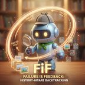
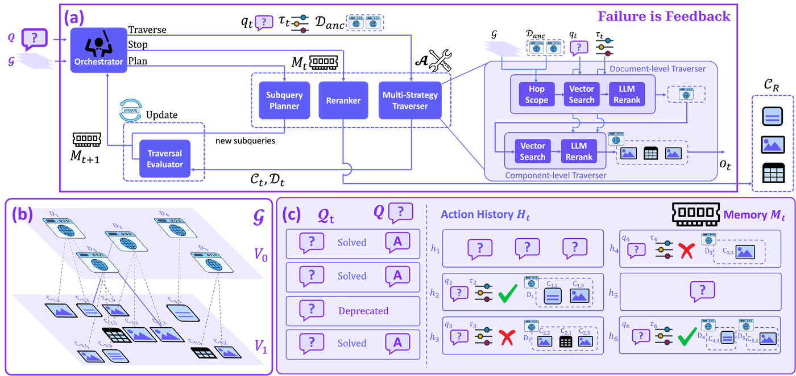
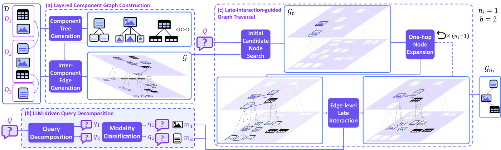
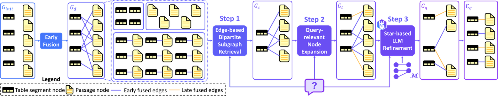
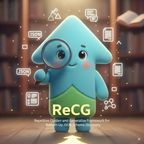
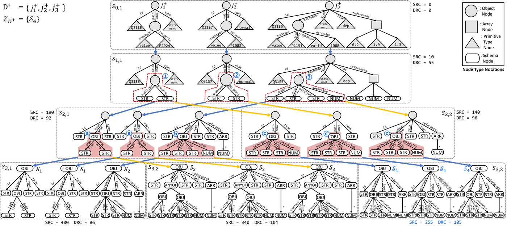
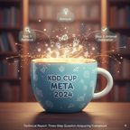
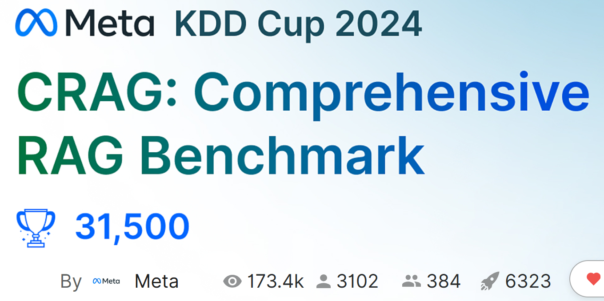
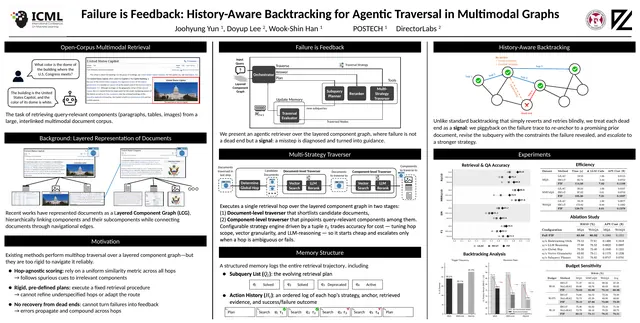
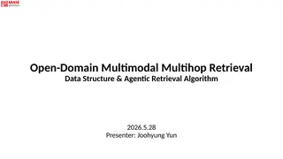

ReCG — Worked Example
ReCG — Worked Example ReCG · PVLDB 2024 · Worked Example Discovering a JSON schema from the leaves up ReCG infers a set of JSON schemas from…
Retrieval that reasons over text, tables, and images.
I am a fourth-year integrated M.S./Ph.D. student (second year of the Ph.D.) in Computer Science at POSTECH, advised by Prof. Wook-Shin Han in the Data Systems Lab. I work where natural language processing meets information retrieval: retrieval-augmented generation over complex, real-world documents that mix text, tables, and images.
My recent work treats retrieval as something an agent does rather than a single lookup: traversing document structure, noticing when a path fails, and backtracking with that feedback. Next, I want these systems to be trustworthy at enterprise scale: verifiable answers over knowledge graphs and multimodal corpora.

Agentic retrieval over multimodal documents must commit to a path without exploring every alternative. FiF treats a failed step as feedback: it backtracks to the last decision point and uses the failure to choose a different branch, reaching state-of-the-art accuracy on MultimodalQA, MMCoQA, and WebQA at lower cost.

LILaC indexes a document collection as a two-layer component graph: a coarse layer for fast candidate generation and a fine layer for reasoning across text, tables, and images. A late-interaction traversal retrieves the relevant subgraph, improving both precision and recall on multihop queries.

Early fusion pre-aligns tables with passages and over-retrieves; late fusion aligns on the fly and under-retrieves. HELIOS combines both over a layered graph and adds an LLM reasoning step, giving higher retrieval accuracy on table-text benchmarks with efficient inference.


Top-down schema discovery decides a node's type before seeing its children and gets heterogeneous data wrong. ReCG works bottom-up, clustering leaf patterns and generalizing upward under a minimum-description-length objective, improving schema accuracy by up to 47% while running faster than prior methods.


A three-step framework for the Meta CRAG challenge: answer from parametric knowledge when it suffices, retrieve external evidence only when needed, and verify the generated answer before returning it, cutting hallucination while keeping retrieval cost low.


Failure is Feedback: History-Aware Backtracking for Agentic Traversal in Multimodal Graphs poster
Open-Domain Multimodal Multihop Retrieval: Data Structure & Agentic Retrieval Algorithm 41 slides LILaC: Late Interacting in Layered Component Graph for Open-domain Multimodal Multihop Retrieval
23 slides + poster
LILaC: Late Interacting in Layered Component Graph for Open-domain Multimodal Multihop Retrieval
23 slides + poster
Joint research collaboration from April to August 2026, funded by the Global AI Frontier Lab of IITP (Institute of Information & Communications Technology Planning & Evaluation), which supports long-term international research visits for graduate students.
Oversaw the technical program of the binational workshop (Oct 24–26, 2025): shaped the program structure, coordinated submission handling, and introduced the accepted papers during the sessions.
Moderated a technical session of the PhD Workshop at VLDB 2024: introduced speakers, kept time, and ran the Q&A.